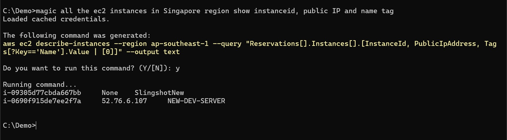
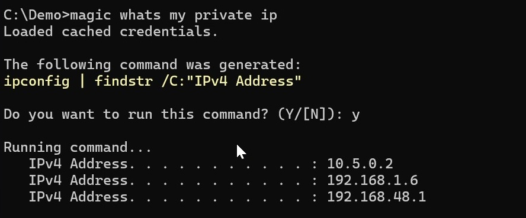

Turbo Charge Your Command Prompt
Gemini CLI is super cool and seems really powerful. But if you’re a purist and a command-line aficionado like me—someone who doesn’t care much for interactive chat mode, and just wants to quickly look up command syntax and run it without constantly switching between the terminal and the browser - then read on.
If you haven’t installed it yet, it’s definitely worth a try! You can install it very easily with a simple command (assuming that you are not living in stone age and already have Node JS and npm installed on your machine)
npm install -g @google/gemini-cli
If you are confined to a CUI based text box to type in your commands then it's not much of a CLI, it is really just a fancy CUI (character based User interface). Don't get me wrong it is indeed good and today's CUI Apps have come a long way from the earliest libcurses and those extended ASCII character based interfaces. Now a days there are things like charm bubble-tea that are taking the CUI to a whole new level. Whethre you call it a CUI or TUI, those character/text-based interfaces are still here and will be here for a long time. There are still some people who reminisce about the shell-based internet connections, lynx, Pine, the kermit file transfer protocol and that peculiar noise of a dial-up modem, which might explain why there are these things like terminal.shop !!
Gemini CLI is completely Open source and is also extensible by design. It is indeed a very good step towards democratizing Agentic AI. I am aware of the ! command that internally invokes the run_shell_command() tool. I am also aware of the gemini -p command line switch. But for me it still left something desired. It simly does not really feel like a true CLI. So I quickly whipped up a simple BAT file that give you really seamless CLI experience.
It is available here in my Github repo.It's a very simply BAT file called magic.bat. The neat trick here is that we are just telling Gemini CLI to just generate the command and we execute it later after getting user's consent. There is a PowerShell version as well called psmagic.PS1.
Now I can simply type something like this on my Windows Command prompt:
C:\Demo> magic enumerate all the running AWS ec2 instances but only show me instance id name-tag,instance type and the public IP
This shows me the exact aws cli command with the proper JMESPath query. It also copies it to the clipboard.

I can also do something like:
C:\Demo> magic find my external IP
It figures out a Web Service like https://api.ipify.org or https://ifconfig.me and shows me the command to invoke that WebRequest. Someone who has already played with Gemini CLI might say "But Gemini can already do even better and actually run the command using web_fetch() tool and just show me the result with this simple command:
C:\Demo> gemini whats my public IP
Yes it's kind of smart that way, I give that to you. But when it comes to something like this:
C:\Demo> gemini whats my Private IP
At present it will not work and respond with something like this:
I am sorry, but I cannot fulfill this request. I do not have access to the necessary tools to determine your private IP address. You can find it by running ipconfig in your terminal.
But with this BAT file it just works;
C:\Demo> magic my private IP

The reason is that it will not really run it for you directly it just finds the right command and gives you an option to execute it.
I am still exploring Gemini CLI. Gemini CLI is much more than just generating commands. It has some very powerful tools like file system access, extensions, new tools, and even MCP server support. Gemini CLI can really help automate many tasks. To be fair, my own use case has been quite limited so far—I’ve only tapped into a small fraction of what Gemini CLI can really do.
When you are using the Gemini CLI through its CUI, it shows some rotating dots animation and shows some funny status messages to calm you down and hide the fact that it is taking some time. But when you are directly using it on the command prompt through the .BAT file hack, sometimes it is frustratingly slow.
PS: And as it always happens, after I created this hack, used it for a few days and decided to write about it I found out about this MS AIShell !! It is in very early stage and currently in preview mode, just getting it up and running requires some efforts. So I have not yet really played with it much.
Perhaps there are already much better ways to accomplish what I'm trying to do. If you are aware of any other tools or anything else that can really boost the command line productivity then do leave a comment about it.Happy Hacking !!